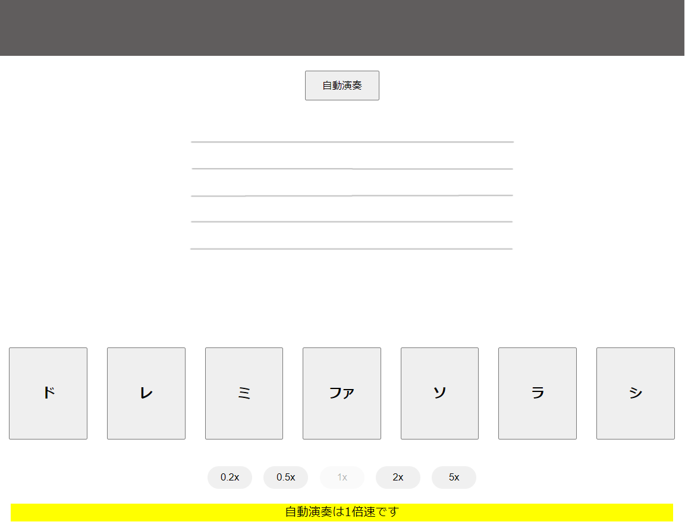
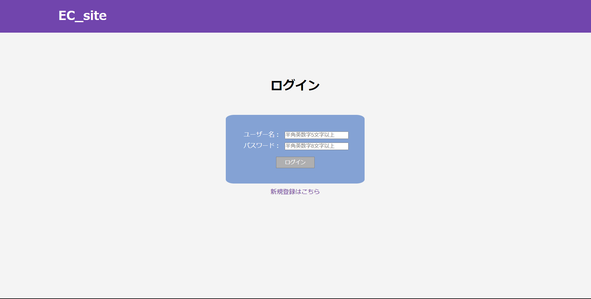
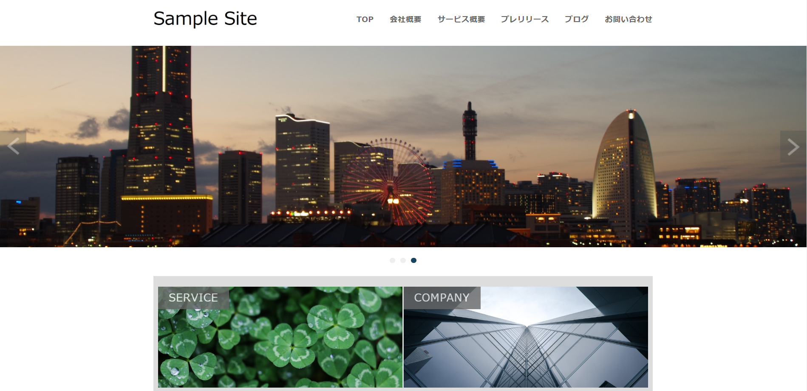
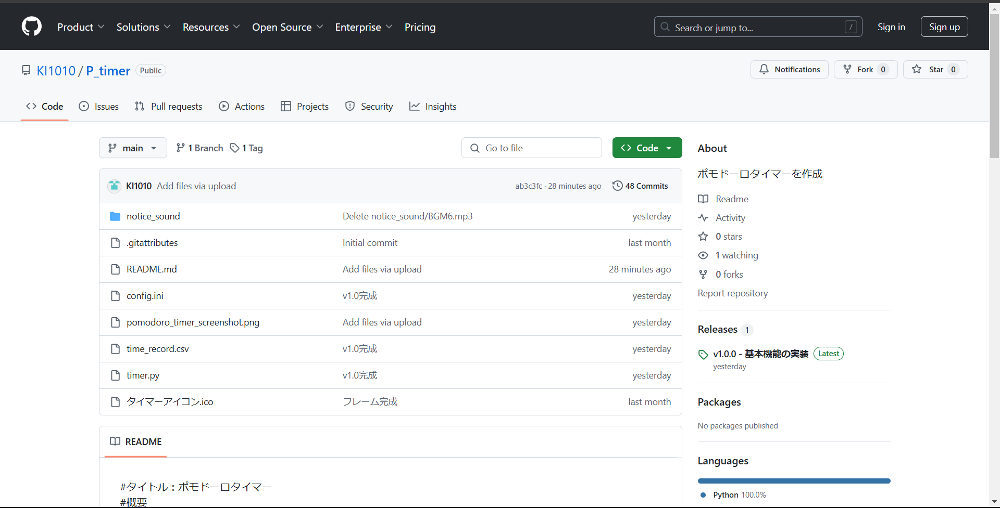

JavaScript:簡易ピアノアプリ

仕様 −
・音名が表示されるエリアがある
・「ドレミファソラシ」に対応した鍵盤があり、鍵盤を押すと対応した音名が表示される（以下、音名が表示されることを演奏と表現する）
・表示された音名は何にもしないと、１秒後に消える
・「自動演奏」ボタンが押されると「チューリップの歌」「きらきら星」のどちらかがランダムに演奏されるされる
・自動演奏時画面上部に演奏中の曲名が表示される
・「自動演奏」ボタンは自動演奏中は「演奏中止」と表示され、自動演奏が終了すると表示が「自動演奏」に戻り、再度クリックすると最初から演奏が始まる
・鍵盤下部のボタンで自動演奏時の演奏速度を変更することが出来る
・自動演奏が終了すると、演奏速度は等倍に戻る
・自動演奏中は鍵盤の機能が無効になる
手順 +
・自動演奏時の曲名を表示する部分を作成
・音名が表示される部分を作成
・鍵盤ボタンを作成
・鍵盤を押すと対応した音名が表示される機能を作成
・自動演奏ボタンを作成
・演奏速度変更ボタン＆自動演奏中の演奏速度変更機能作成
・現在の自動演奏速度表示部分作成
・音名表示時背景に音階を表示する機能作成
工夫 +
・音名が表示される際に、背景に表示される音名に対応した音符と五線譜が表示されるようにした
・自動演奏時の速度を変更できるようにした
PHP/MySQL:ECサイト

仕様 −
・ディレクトリ構造にMVCモデルが使用されている
・管理用ユーザーでログインすると商品一覧ページにアクセスできる
・全7ページで構成されている
┣ログインページ（トップページ）：登録されたユーザーでログインを行う
┗ログイン状態でアクセスした場合、商品一覧ページにリダイレクトされる
┣ユーザー登録ページ：新規ユーザーの登録を行う
┗ユーザー名を重複して登録することはできない
┣商品管理ページ：販売する商品の追加、在庫数、値段の変更を行う
┣商品一覧ページ：選択した商品のカートへの追加を行う
┣ショッピングカートページ：カート内の商品の削除、個数変更、購入確定を行う
┣購入完了ページ：完了した購入情報の表示が行われる
┗マイページ（オリジナル機能）：購入情報の履歴の表示を行う
・管理用ユーザーIDとパスワード
┗id:ec_admin pass:ec_admin
手順 +
・ログインページのhtmlを作成
・他のページと共通する部分をテンプレート化
・ユーザー登録ページのhtmlを作成
・商品管理ページのhtmlを作成
・ユーザー登録機能を作成
・ログイン機能を作成
・商品の登録、削除、個数変更、単価の変更機能を作成
・商品一覧ページのhtmlを作成
・ショッピングカートページのhtmlを作成
・商品をカートに追加する機能を作成
・カート内の商品の個数変更、カートから削除する機能を作成
・購入完了ページのhtmlを作成
・商品の購入処理をする機能を作成
・マイページのhtmlを作成
・購入処理時データベースに購入情報を保存する機能を作成
・ログインしているユーザーの過去の購入情報を一覧表示、詳細を確認できる機能を作成
工夫 +
・マイページからログイン状態のユーザーの、過去の購入記録を確認できる
・シンプルなデザインを意識して作成した
WordPress

仕様 −
・プレリリースを投稿できる
・ブログを投稿できる
・各ページにパンくずリストがある
・お問い合わせメールを送れる
・静的ファイルから作成
手順 +
・静的ファイルをダウンロードする
・テーマファイルを作成する
・テーマファイルに静的ファイルに入っている、html以外のファイル、フォルダを入れる
・残りのhtmlファイルを用いて、テンプレートを作成する
・htmlファイルからヘッダーやフッターなどのphpファイルを作成する
・リンクアドレスにテンプレートタグに置き換える
・ヘッダー、フッターといった共通部分の作成
・コンテンツ部分の作成
・お知らせ一覧ページの作成
・ブログ一覧ページの作成
・詳細ページの作成
・固定ページの共通部分を作成
・サービス概要ページの作成
・会社概要ページの作成
・お問い合わせページの作成
・Information部分の作成
・アイキャッチ画像の設定
・パンくずリストの作成
・ページネーションの作成
・プラグインをを使用しカスタムフィールドの設定を行う
・プラグインを使用しお問い合わせフォームの作成
工夫 +
・上手くいかない部分があってもすぐにネットで調べずに自己解決できないか、
コードを再確認し原因の特定をする作業を普段よりも意識して行った
Python:ポモドーロタイマー

仕様 −
・作業時間と休憩時間のタイマー
・タイマーの起動と終了時間を記録する機能
・作業時間と休憩時間でログの色分けする機能
・タイマーの通知方法を設定する方法
・設定を別ウィンドウで表示する機能
・アプリのインストール方法
1.上の画像をクリックしリンクからGitHubにアクセスしReleasesから最新のVerを選びtimer.exeをダウンロードします。
2.ダウンロードしたファイルを実行します
3.Windowsのセキュリティ警告が出た場合は「詳細情報」→「実行」をクリックしてください。
手順 +
・アプリの設計書の作り方を調べて作成する
・工程表の作り方を調べて作成する
・タイマー機能の作成
・通知機能の作成
・タイマーの繰り返し機能の作成
・設定機能の作成
・GUIのレイアウトの決定
・タイマー開始、終了時間の記録機能の作成
・設定をファイルで保存する機能の作成
・ログデータの色分け機能の作成
・色分け機能の設定機能の作成
・設定のリセット機能の作成
・通知音機能の作成
・UI/UXの調整
・エラーが出ないか確認
・アプリを実行可能ファイルに変更する
・完成
工夫 +
・設計書、工程表を作り作業の進捗状況を確認しながら工程表に則り作業を進めることが出来た
・独学で0からPythonを学び完成させることが出来た